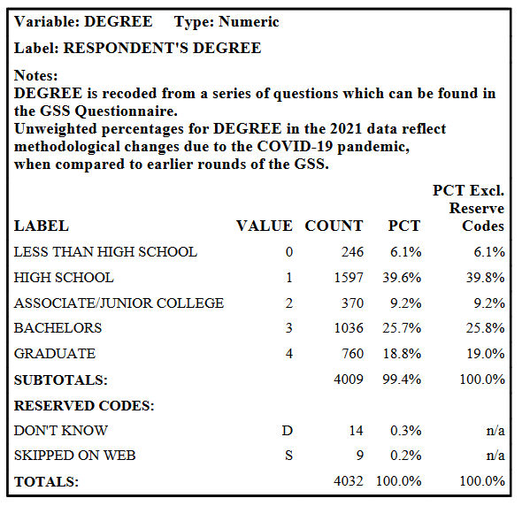
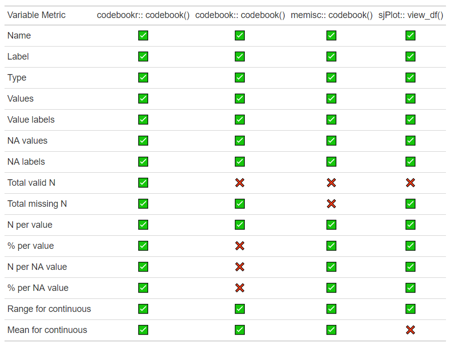
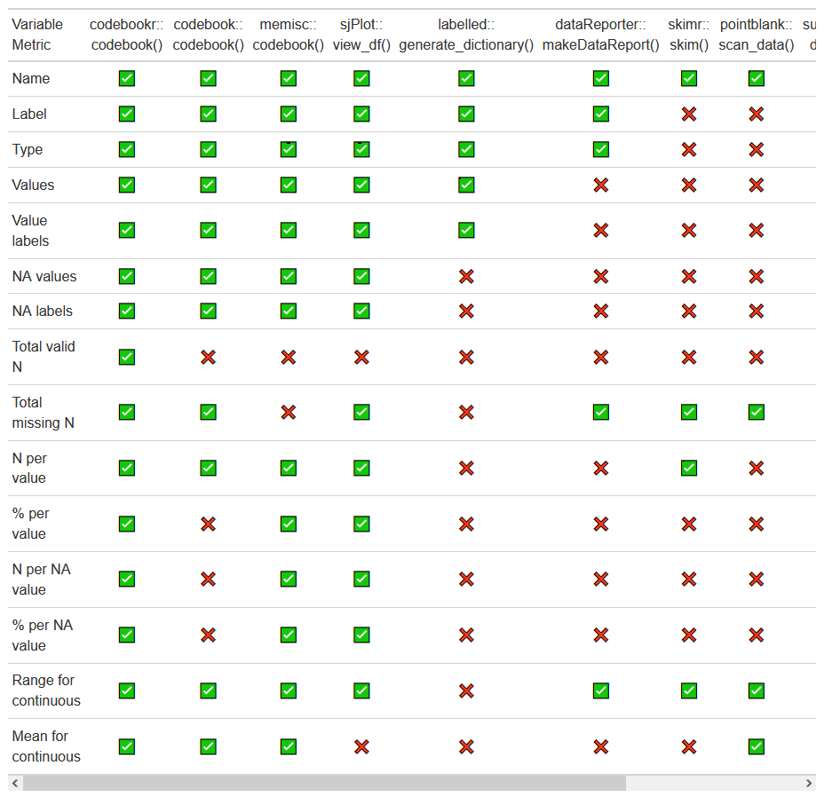

A Comparison of Packages to Generate Codebooks in R
⚡️ R-Ladies NYC Lightning Talk ⚡️
Crystal Lewis
Documentation
Whether in academia or industry, it is common to share data with collaborators. And it is important that along with your data, you share some form of documentation that allows your collaborators to use and understand your data.
Codebooks

One type of documentation is a codebook. A codebook is often used to document survey instruments. It describes the contents, structure, and layout of a data file. A codebook enables the user to quickly ascertain some of the details about a dataset before downloading the file.
Criteria
✅ Compatible with class haven labelled data
✅ Exportable to txt, Word or PDF format
✅ Produces this variable level information
Variable name
Variable label
Variable type
Code values
Code labels
Missing value codes
Missing value labels
Total valid N
Total missing N
N per value
% per value
N per missing value
% per value
Range for continuous
Mean for continuous
So I started searching for R packages that produce codebooks so I did not have to make these by hand. I initially found and reviewed 10 different packages and I narrowed this presentation down to 4 based on 3 criteria
I work with a lot of academics who use SPSS and Stata and it is important to me that the package integrates well with data that has embedded metadata (like embedded variable and value labels).
I wanted the codebook to be human readable
These are 15 summary statistics I think are important for getting a holistic picture of what is going on in your data.
Example Data
Pet Ownership and Attachment Survey
participant_id
participant_age
pet_type
pet_1
pet_2
pet_3
10
12
1
2
1
1 22
14
2
2
2
-99 13
15
1
4
4
1 11
13
1
2
1
1
pet_1: Within your family, your pet likes you best
pet_2: You talk to your pet as a friend
pet_3: You buy presents for your pet
(1 = almost never, 2 = sometimes, 3 = often, 4 = almost always, -99 = missing response)
Before we review the packages, I wanted to introduce some example data I used to test out our 4 codebook packages. These are made up responses to a few survey items that I found online about pet ownership and attachment and I thought they were fun questions to work with. We have 3 questions about pet ownership, the first one is …
Review of 4 packages

This table gives you a quick overview of what statistics can be exported by each package. But we are going to go through each package one by one now. You can review samples of the code and output from each of these packages in my github repo linked in the footer of these slides as well
codebookr::codebook()
<- codebookr:: codebook (survey,title = "Pet Relationship Study" , subtitle = "Various Authors" , description = "This study was funded by the Pet Society. Here is a basic description of our study, our methods, our sample, and protocols." )print (study_codebook, "codebookr.docx" )
The codebookr has one function that allows you to create a codebook, and that function is “codebook”
The codebook function creates an rdocx object using the flextable and officer packages under the hood which you can then print to a word document using the print function
codebookr::codebook()
Prints to Word Document
Works well with haven labelled data
Options to add additional variable attributes
Prints all summary statistics
Can add overall project metadata
Which makes it easy to manipulate after you export in case there are additional pieces of information you want to add
It works really well with haven labelled data and recognized all of my embedded metadata
There are options to add variable attributes such as labels if your data does not come in with metadata added already or you can add additional metadata such as variable skip patterns
It provided all of the summary statistics I was looking for
The function has arguments to add project metadata such as a title, author and project description
codebook::codebook()
Creates the pre-filled .Rmd document
:: new_codebook_rmd ()
Creates the codebook
:: codebook (survey)
The new_codebook_rmd function creates a pre-populated .rmd file for you to work in (this image here is what the rmd file looks like)
And then within that rmd there are a few different functions you can use to build your codebook but ultimately the codebook function is the one that creates your codebook
You can then render the .Rmd file to get your full codebook
codebook::codebook()
Prints to HTML, Word, PDF and other formats
Works fairly well with haven labelled data
Options to add additional variable attributes
Prints some of the summary statistics (not all)
Provides additional statistics such as scale reliability estimates
…
The only thing I struggled with is getting the function to recognize haven labelled user defined missing values
There are options to add variable attributes if your data does not come in with metadata added already
It provides most of the summary statistics I was looking for. It was just missing a few.
This package does however provide some additional statistics that may be beneficial to some people such as scale reliability estimates.
memisc::codebook()
<- memisc:: codebook (survey):: Write (study_codebook, file = :: here ("code" ,"my_memisc_codebook.txt" ))
The codebook function creates a codebook object which you can then write out to a text file
memisc::codebook()
Prints to txt file
Works well with haven labelled data
Options to add additional variable attributes
Prints most of the summary statistics (not all)
Provides some additional summary statistics for continuous variables
I like the simplicity of this package. It prints a very simple but clear text file
It works really well with haven labelled data and recognized all of my embedded metadata
There are options to add variable attributes if your data does not come in with metadata added
It provided almost all of the summary statistics, just missing a few.
Provides additional statistics such as skewness and kurtosis
sjPlot::view_df()
:: view_df (survey,show.type = TRUE ,show.frq = TRUE ,show.prc = TRUE , show.na = TRUE ,show.string.values = TRUE ,file = here:: here ("code" , "my_sjplot_codebook.html" ))
The view_df function creates our codebook here
There are several arguments for this function but I included the ones that got me closest to the statistics that I was looking for.
sjPlot::view_df()
Prints to html file
Works well with haven labelled data
Prints most of the summary statistics (not all)
There are several arguments included to control your level of detail
This function prints to an html file which might be great for some purposes and less great for others.
It works well with haven labelled, it recognizes all of my embedded metadata
It includes almost all of the summary statistics I was looking for, just missing a few.
There are several argument options that you can include to control the level of detail you want to show in your codebook which is nice
A review of 10 packages
You can see a table of all 10 packages I reviewed on GitHub

Like I mentioned, I initially reviewed 10 packages but narrowed down to the 4 I showed you today because a) they either didn’t work well with haven labelled data or b) they didn’t meet enough of the criteria I was looking for. But if you are interested, you can review a table of all the packages I tried on GitHub